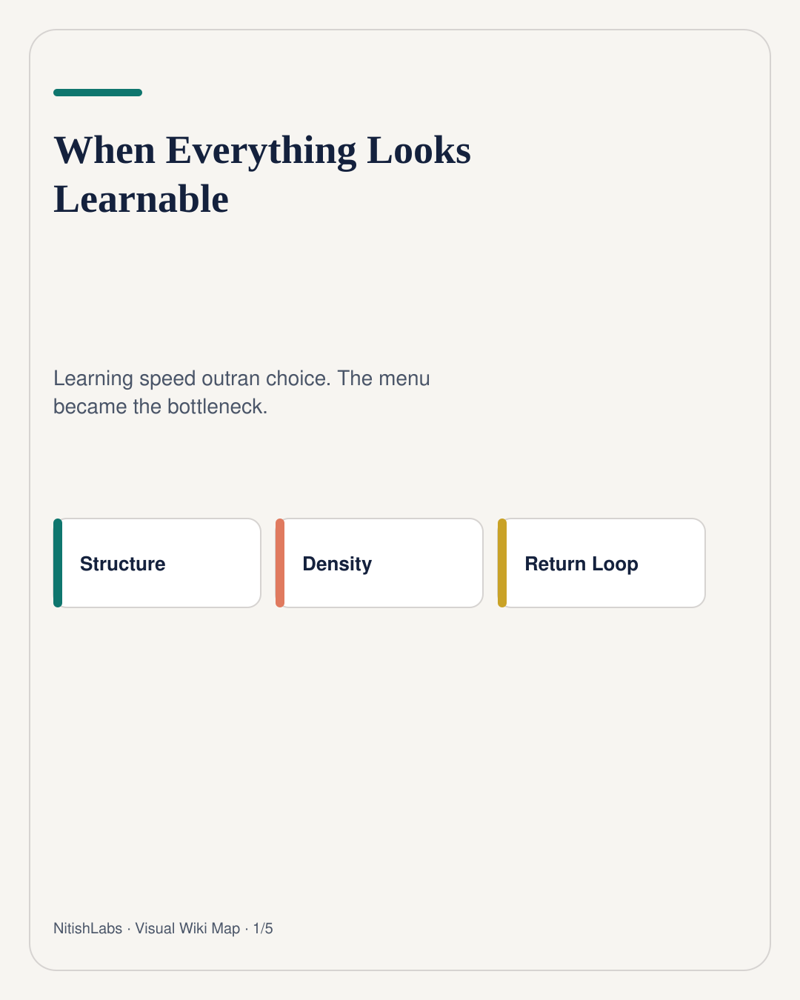
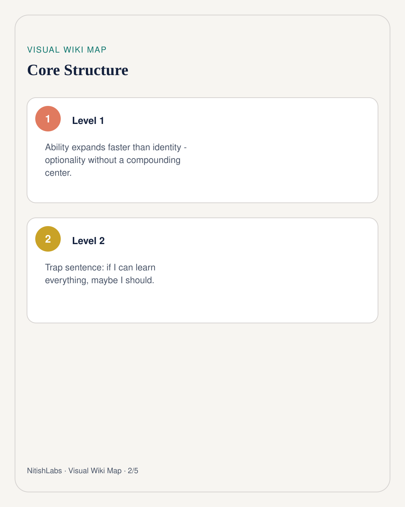
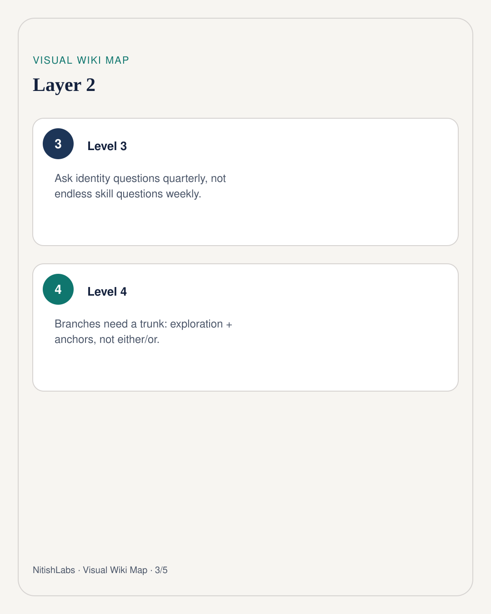
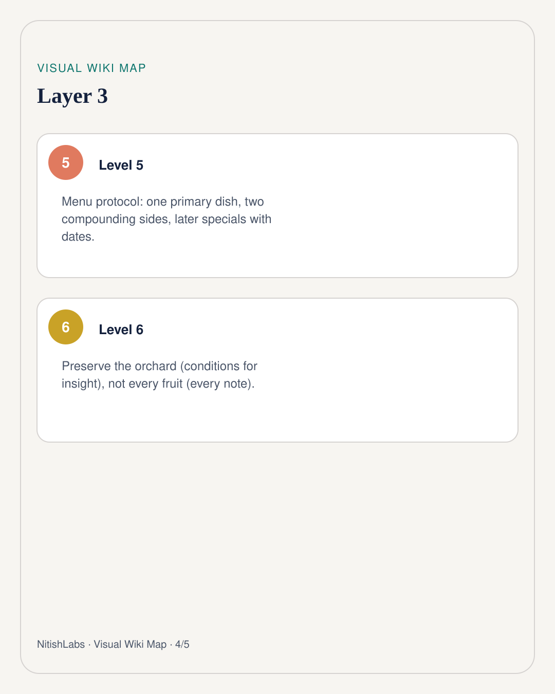
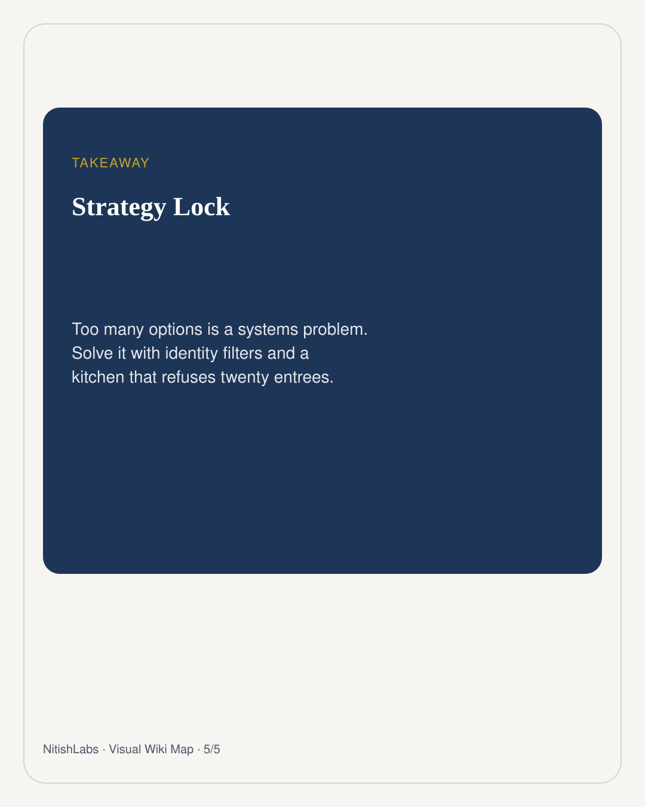

When Everything Looks Learnable
Too many routes is not freedom. It is an unbounded option set colliding with a brain that can learn almost anything - and therefore keeps ordering more plates.
Visual Wiki Map
Compressed schema carousel · swipe





Nitish Chauhan started one conversation with a casual check-in. It turned into a sharper problem: when you have too much freedom, too many skills within reach, and too many adjacent domains lighting up at once, the menu itself becomes the bottleneck.
A few years ago, content, marketing, AI agents, VPS ops, psychology, and personal knowledge systems would have looked like ten careers. Now they feel like one interconnected machine. That is exciting. It is also how people quietly drown in optionality.
The real problem is not curiosity
Curiosity is not the failure mode. The failure mode is learning speed outrunning selection speed. Ability expands faster than identity. You keep collecting leverage-shaped skills without deciding which identity they are supposed to compound into.
If I can learn everything, maybe I should.
That sentence is the trap. High-agency people do not usually chase trends for vibes. They ask whether something becomes leverage. The danger is that almost everything can be framed as leverage if you squint hard enough.
Ask for identity, not more skills
A content writer learns SEO. A marketer learns funnels. A developer learns programming. Someone building leverage may learn all three - not to become three people, but to become the person who can combine them.
Expansion is fine if anchors hold. Branches need a trunk. So the better quarterly question is not “what should I learn?” It is:
- What identity am I actually building?
- Which skills compound with that identity?
- Which ones are entertaining detours wearing leverage cosplay?
Preserve the orchard, not every fruit
One useful signal from the same thinking arc: when exploration is genuine, humor shows up as a side effect. Not forced jokes - emergent playfulness. That is less “humor makes you smart” and more “humor is a diagnostic for a healthy cognitive state.”
Another signal is subtler: stop obsessing over preserving every insight. Preserve the conditions that generate insights. Scheduling another playful excavation is often more valuable than archiving one more note you will never reopen.
Fruit archive → brittle memory Orchard care → renewable insight conditions
A practical menu protocol
Treat your interests like a restaurant menu with kitchen constraints:
- Pick one primary dish (identity / flagship problem).
- Allow at most two sides that compound with it.
- Park everything else on a “later specials” list with a review date.
- If a new skill does not strengthen the primary dish within 30 days of contact, it is dessert - optional, not strategy.
At NitishLabs, this is the point of a living lab: not infinite tasting menus, but deliberate experiments that survive contact with reality. Too many options is a systems problem. Solve it with identity, compounding filters, and a kitchen that refuses to cook twenty entrees at once.